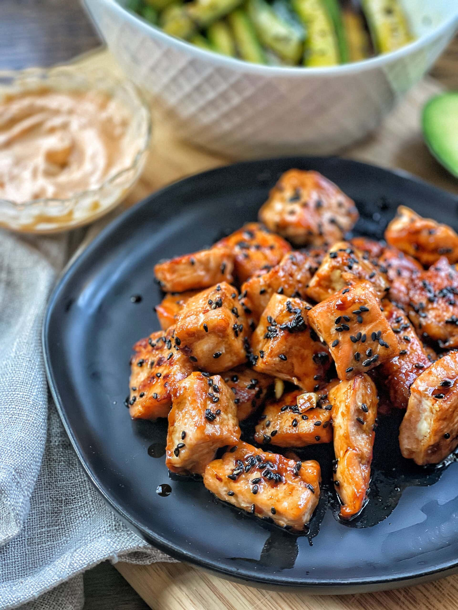

Baked Honey Garlic Salmon Bites

These Baked Honey Garlic Salmon Bites are easy and delicious!
Ingredients
- Sesame oil
- Honey
- Chili garlic Sauce
-
- Coconut Aminos
- Ginger
- Garlic
- Salmon
- Sesame Seeds
Time to cook!
- Start by chopping the salmon into bite sized pieces.
- Next, add the sesame oil, honey, chili garlic sauce, coconut aminos, ginger and minced garlic to a small bowl. Mix sauce ingredients thoroughly and then add the chopped salmon to the mixing bowl and toss to coat.
- Cover with plastic wrap and leave for 30 minutes or more
- Preheat the oven to 400F. While the oven is preheating, line a baking sheet with parchment paper.
- Once the oven is preheated, bake for 15 minutes, flipping halfway through. This will ensure even cooking to each piece. After the salmon is done, remove the sheet pan from the oven and sprinkle with sesame seeds.
HINT: This recipe can be adapted to cooking in the air fryer. If using an air fryer, you will want to reduce the cooking temperature and time. Set the air fryer to 350F and cook for 10 minutes. Make sure to shake the basket after 5 minutes.